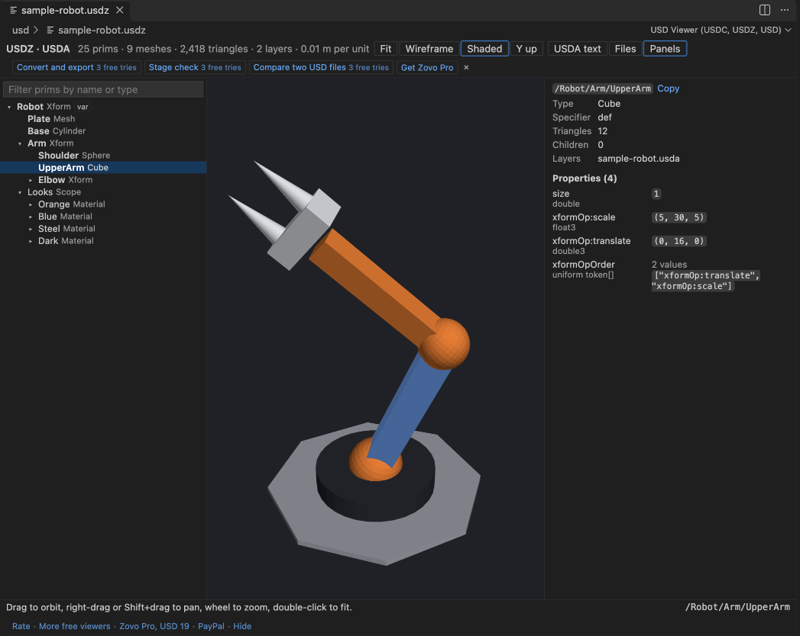

Open files in VS Code and Cursor / 3D and imaging
Open a USD, USDC or USDZ file in VS Code
VS Code shows a binary .usdc or .usdz file as unreadable bytes. USD Viewer opens .usdc, .usdz and .usd files with a prim tree, the attributes, relationships, references and variants of each prim, the binary layer as readable USDA text, and a 3D view of the meshes. It reads the files itself, so you need no USD install, no account and no network. All of that is free. Zovo Pro (USD 19 once) adds convert and export (USDA, USDC, a flattened stage, OBJ and GLB), a stage check report, and a compare of two USD files, with 3 free tries each.
Free, MIT license. Extension ID zovo.zovo-usd-viewer, version 0.1.0. Needs VS Code 1.75.0 or newer.

Steps in VS Code
- Install USD Viewer: USDA, USDC, USDZ from the Marketplace, or press Ctrl+P (Cmd+P on macOS) and run
ext install zovo.zovo-usd-viewer. - Click a
.usdc,.usdzor.usdfile in the Explorer. It opens in the viewer with the prim tree, the 3D view and the details panel. - A
.usdafile opens as text with syntax colors. Click the preview button in the editor title, or run "USD Viewer: Open in USD Viewer", to see it in the viewer. - Click a prim in the tree to highlight it in blue and list its attributes. Double-click it to frame it. The filter box finds prims by name or type.
- In the 3D view, drag to orbit, right-drag or Shift+drag to pan, and use the wheel to zoom. F fits the stage, W shows polygon edges and S hides the shaded surfaces.
- Click USDA text in the toolbar to read the layer as text. In a USDZ package, Files lists what is inside it.
Where Zovo Pro saves time
The prim tree, prim details, USDC shown as USDA text, the 3D view, the USDZ file list and following sublayers, references, payloads and variants are free, with no network calls and no telemetry. There is no trial timer and no license banner.
When an asset loads with missing parts in another tool, Stage Check lists the problems: missing layers, references and textures, broken meshes, a missing defaultPrim, upAxis or units, and USDZ packaging problems, saved as a Markdown or JSON report. The other two Pro tools are Convert and Export, which saves USDC or USDZ as USDA text, USDA as USDC binary, the composed stage as one flat USDA file, and meshes as OBJ or glTF binary (GLB), and Compare Two USD Files, which compares two files as prim trees with the prims added and removed and every changed value.
With Stage Check (Zovo Pro)
- Open the USD file and click Stage check in the row under the viewer toolbar, or run "USD Viewer: Stage Check (Pro)" from the Command Palette.
- Read the findings.
- Save the report as Markdown or JSON.
Stage Check works 3 times on your computer before it asks for a license, and a try counts only when you get a result. Opening a file shows no popup and no countdown.
Zovo Pro costs USD 19 once. It is not a subscription, and it turns on the Pro tools in every Zovo extension, not only USD Viewer: USDA, USDC, USDZ. After a card payment (Stripe) your license key shows on the next page. In VS Code, run "Zovo Pro: Enter Zovo Pro license key" from the Command Palette and paste it. The key is checked on your computer, with no network call. With GitHub Sponsors, pick the "$19 one time" tier, then run "Zovo Pro: I already paid: unlock with GitHub Sponsors" and sign in with the same GitHub account. With PayPal, send USD 19 with "Zovo Pro" in the note and the key comes by email within a day.
A team of 5: USD 59 once, by card or by PayPal. Every rule and every Pro tool is on the Zovo Pro page.
Steps in Cursor, Windsurf or VSCodium
- Open the Extensions view with Ctrl+Shift+X (Cmd+Shift+X on macOS).
- Search for
zovo.zovo-usd-viewerand click Install. Cursor, Windsurf and VSCodium install from Open VSX, where it is published aszovo/zovo-usd-viewer. - If your editor has no gallery, download the .vsix from the Open VSX page and run "Extensions: Install from VSIX...".
- Then use it the same way as in VS Code.
What USD Viewer: USDA, USDC, USDZ handles
- USDA text layers with all value types, list ops, variant sets and time samples.
- USDC binary (crate 0.8.0, the version current USD tools write, is tested).
- USDZ packages: the root layer and every layer inside, with the size and alignment of each file.
- Sublayers, references, payloads, inherits, specializes and variant selections, on disk and inside USDZ packages.
What it does not do
- Textures are not drawn. Faces use their displayColor or the diffuse color of a UsdPreviewSurface material, and textured surfaces show in light gray.
- Layer offsets, relocates, value clips and list edits across layers are not applied.
- Curves, points, NURBS and volumes are listed in the tree but not drawn, and skinned meshes show their rest pose.
- Layers in other formats (
.mtlx,.abc) and paths that need a custom asset resolver (URLs,omniverse://) are not opened.
Other options
- USD Language (
AnimalLogic.vscode-usda-syntax, 27,191 installs, not on Open VSX). Its own description: "Pixar USD Language Extension by Animal Logic". Last updated in August 2020. - Usdc Viewer (
sssooonnnggg.usdc-viewer, 5,568 installs, not on Open VSX). Its own description: "View OpenUsd binary format(.usdc) as plain text format". It shows text, with no 3D view. - usdview and usdcat. The OpenUSD tools from Pixar: usdview draws the stage in its own window and usdcat prints a USDC file as text. Both need a USD install.
Install counts and Open VSX status were checked on 12 November 2026. Descriptions in quotes are the extensions' own.
Questions
Can VS Code open a .usdz file?
Not by itself. A .usdz is a zip package with binary layers, so VS Code shows it as binary. USD Viewer opens it with the prim tree, the 3D view and the list of files inside.
Do I need Pixar USD or Python installed?
No. The extension reads USDA, USDC and USDZ itself, on your computer, with no USD install.
Can I convert USDC to USDA?
You can read any USDC layer as USDA text for free with USDA text in the toolbar. Saving it as a .usda file, or converting USDA to USDC, OBJ or GLB, is the Pro tool Convert and Export, with 3 free tries.
Does it work in Cursor or Windsurf?
Yes. Cursor, Windsurf and VSCodium install extensions from Open VSX. Search for the extension in their Extensions view and install it there.
More about USD Viewer: USDA, USDC, USDZ
Read the USD Viewer: USDA, USDC, USDZ page for every feature and setting, or the source code on GitHub.
Related guides
- View STL files in VS Code
- Open DICOM and NIfTI files in VS Code
- Calculate the volume of an STL file
- DICOM to NIfTI in VS Code
Zovo Pro and support
Zovo Pro: USD 19 once, every Zovo viewer. It turns on the Pro tools in this extension and in the other Zovo extensions you use. The free features stay free.
After a card payment your license key shows on the next page. Paste it with the command "Zovo Pro: Enter a key".
You can also support the work with no Pro:
Need your format supported?
Open a format request with a sample file, and I reply there whether it can be done. For USD 299 once, through this GitHub Sponsors tier, I add your file format or a missing feature to this extension, with tests, within 7 days.